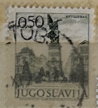
| SOURCE | TITLE| IMAGE MATCH | click to source page |
| HipStamp | Yugoslavia 1070 Monument | Europe - Yugoslavia, General Issue Stamp / HipStamp | 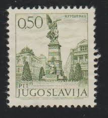 |
| eBay | Serbia Postal Stationery for sale | eBay | 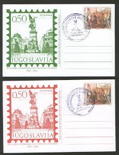 |
| Shutterstock | Yugoslavia Circa 1980 Stamp Printed Yugoslavia Stock Photo 74965663 | Shutterstock | 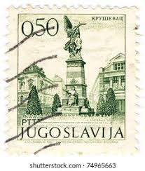 |
| Dreamstime.com | Krusevac, Serbia - 14-08-2021: Classic IMT Tractor in a Field in Serbia Editorial Photography - Image of classic, farming: 228675642 | 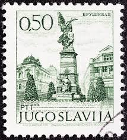 |
| Colnect | Stamp: Zagreb, Josef Szeman (Yugoslavia(Antique Prints of Yugoslav Cities) Mi:YU 1500,Sn:YU 1131,Yt:YU 1385,Sg:YU 1546,AFA:YU 1489,Un:YU 1385 📮 | 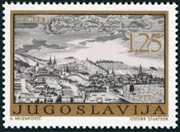 |
| Osta | Jugoslaavia " VAATED " 1972 (247536765) - Osta.ee | 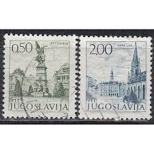 |
| Wikimedia.org | File:674202-Memorial in Kruševac-Tourism-Definitive -Jugoslavija.jpg - Wikimedia Commons | 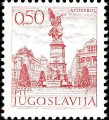 |
| Amazon.com | Amazon.com: Yugoslavia 1465I A y,1476y-1477y, 1493I A y-1494I A y (Complete.Issue.) unmounted Mint/Never hinged ** MNH 1972 Attractions (Stamps for Collectors) : Toys & Games | 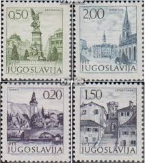 |
| Good afternoon to You all. It's the letter Y in the a-z of Trees on Stamps. Here is mY choice, I'm looking forward to seeing Yours. Yugoslavia #stampcollecting #philately #stamps | 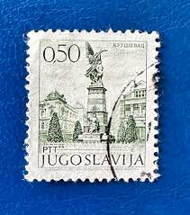 | |
| 45cat | Beograd 11000 - Gallery | 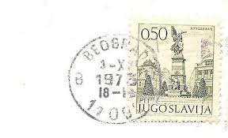 |
| eBay | Yugoslavia year 1971 Michel No. 1415 Proclamation of Commune MNH (**) | eBay | 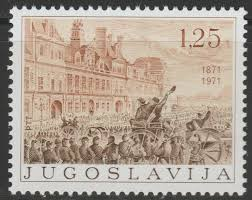 |
| Dreamstime.com | Antique Prints of Yugoslav Cities - Zagreb, Josef Szeman Editorial Stock Image - Image of ancient, canceled: 372880479 | 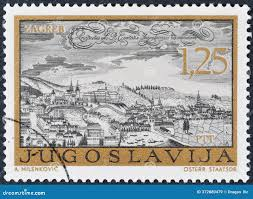 |
| creazilla.com | 1860 Sachsen Leipzig Gera Mi9 - Free photos on creazilla.com | 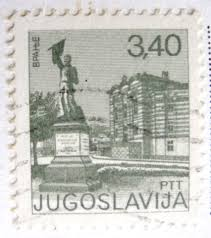 |
| Todocolección | yugoslavia - valor facial 1 din. - año 1935, re - Buy Antique stamps of Yugoslavia on todocoleccion | 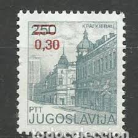 |
| Dreamstime.com | Dr Andrija Mohorovicic editorial image. Image of earth - 96889400 | 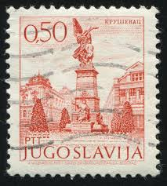 |
| Alamy | YUGOSLAVIA- CIRCA 1971: A stamp printed in Yugoslavia shows Olympic week,circa 1971 Stock Photo - Alamy | 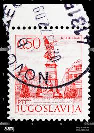 |
| Shutterstock | Romania Circa 1955 Stamp Printed Romania Stock Photo 92224786 | Shutterstock | 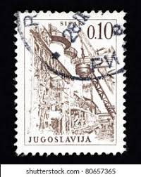 |
| Alamy | Yugoslavia stamp hi-res stock photography and images - Page 8 - Alamy | 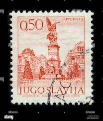 |
| Blogger.com | Postcards from the Past: Subotica. Yugoslavia/Serbia | 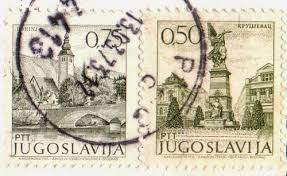 |
| eBay | Yougoslavie 1427x-1430x (édition complète) neuf 1971 timbres | eBay | 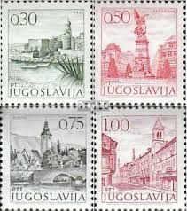 |
| eBay | Architecture Multi-Color Yugoslavian Stamps for sale | eBay | 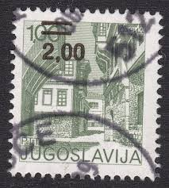 |
| Blogger.com | Postcards from the Past: Adriatic Sea. Yugoslavia/Croatia. 1973 | 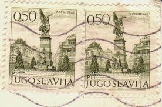 |
| alamy.de | JUGOSLAWIEN - UM 1971: Eine in Jugoslawien gedruckte Briefmarke zeigt den Kaufmann Ivanisevic, Gemälde von Anastasije Bocaric, um 1971 Stockfotografie - Alamy | 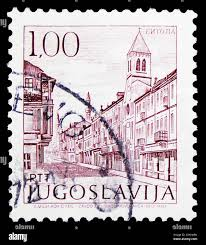 |
| ebid.net | FRANCE, Uzerche, Correze, blue 1955, 18F, #2 on eBid United Kingdom | 194283905 | 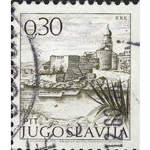 |
| novi.ba | Poštanske marke iz vremena Jugoslavije | novi.ba | 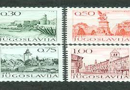 |
| Osta | Jugoslaavia " LINNAVAATED " 1971 MNH (247812099) - Osta.ee | 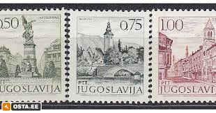 |
| HipStamp | Yugoslavia 1717 Korcula | Europe - Yugoslavia, General Issue Stamp / HipStamp | 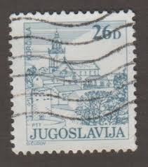 |
| Shutterstock | Yugoslavia Circa 1973 Cancelled Postage Stamp Stock Photo 2608194781 | Shutterstock | 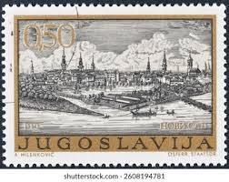 |
| Dreamstime.com | Memorial in Krusevac, Tourism-Definitive Small Serie, Circa 1971 Editorial Stock Image - Image of moscow, philately: 145576154 | 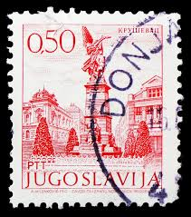 |
| postbeeld.com | Stamp 1971, Yugoslavia Paris commune 1v, 1971 - Collecting Stamps - PostBeeld - Online Stamp Shop - Collecting | 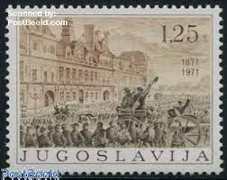 |
| Freestampcatalogue.com | Stamps from Yugoslavia - Freestampcatalogue.com - The free online stampcatalogue with over 500.000 stamps listed. | 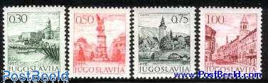 |
| Shutterstock | 4+ Thousand Yugoslavia Stamp Royalty-Free Images, Stock Photos & Pictures | Shutterstock | 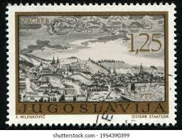 |
| Shutterstock | 1+ Thousand Serbia Postal Royalty-Free Images, Stock Photos & Pictures | Shutterstock | 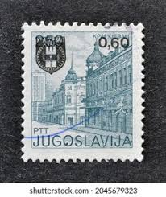 |
| HipStamp | Yugoslavia Sc 1073a F-Vf/Used - 1973 1d - Views | Europe - Yugoslavia, General Issue Stamp / HipStamp | 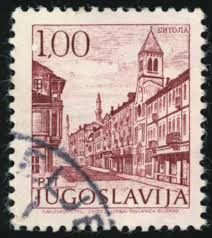 |
| eBay | Yugoslavia 1596 block/4,MNH.Michel 1974. Towns 1983.Kragujevac,new value. | eBay | 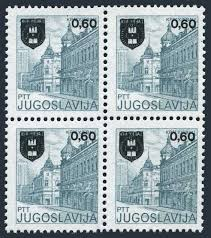 |
| Dreamstime.com | Novi Sad, Yugoslavia, Danube Bridges Serie, Circa 1985 Editorial Stock Image - Image of collection, retro: 155078104 | 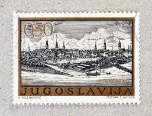 |
| eBay | 1965 - Yugoslavia 1982 - The 40 Years of Yugoslavian Pioneers – MNH Set | eBay | 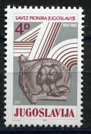 |
| Alamy | Postage stamp yugoslavia hi-res stock photography and images - Alamy | 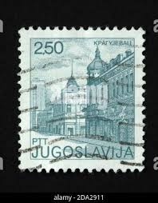 |
| Shutterstock | Yugoslavia Circa 1980 Stamp Printed Yugoslavia Stock Photo 126911246 | Shutterstock | 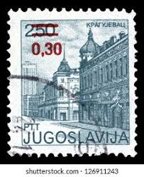 |
| eBay | YUGOSLAVIA PARTISANS - INVERTED OVERPRINT - SIGNED | eBay | 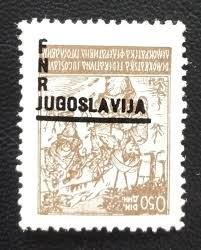 |
| eBay | Business, Industry, Careers Yugoslavian Error, Variety Stamps for sale | eBay | 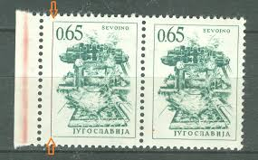 |
| Shutterstock | Yugoslavia Circa 1972 Stamp Printed Yugoslavia Stock Photo 126898460 | Shutterstock | 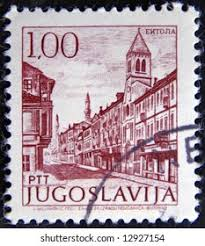 |
| eBay | 1971 Yugoslavian Postage Stamp Bitola 1 Dinar Purple Canceled | eBay | 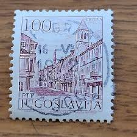 |
| eBay | YUGOSLAVIA # 1366 MNH CENTENARY SERBO-TURKISH WAR | eBay | 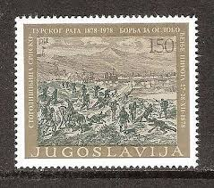 |
| eBay | YUGOSLAVIA-MNH STAM, 0.60/2.50din - ERROR ON OVERPRINT, DOUBLE OVERPRINT - 1983. | eBay | 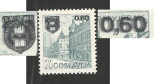 |
| Aukcijska Kuća Barac&Pervan | Barac&Pervan Auctions • Item | 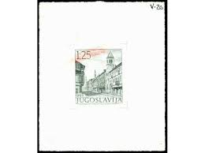 |
| Amazon.com | Amazon.com: Yugoslavia 1966,1967 (Complete.Issue.) unmounted Mint/Never hinged ** MNH 1983 Postage Stamp (Stamps for Collectors) : Toys & Games | 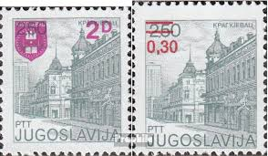 |
| HipStamp | Yugoslavia 838: 65d Sevojno copper works, used, VF | Europe - Yugoslavia, General Issue Stamp / HipStamp | 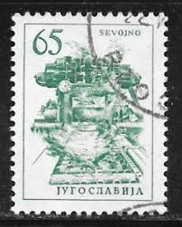 |
| Bid Inside Auctions | Jugoslawien 3,40 Din. Sehenswürdigkeiten im ... - Auctions - Dr. Reinhard Fischer | 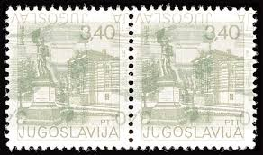 |
| sellosmundo.com | Sevoino. Yugoslavia Europe ref. 114286 | |
| Dreamstime.com | Ljubljana Monument, Revolution Monuments Serie, Circa 1974 Editorial Image - Image of mail, postal: 145576395 | |
| eBay | Yugoslavia 2181,2182-83,2185,2186 mint/MNH | eBay | |
| Shutterstock | 36 Kotor Stamp Royalty-Free Images, Stock Photos & Pictures | Shutterstock | |
| eBay | YUGOSLAVIA #1426-1427 1979 EUROPA MINT VF NH O.G b | eBay | |
| eBay | YUGOSLAVIA -MNH BLOCK OF 4 STAMPS-PLATE ERROR, "RADAČAC" instead "GRADAČAC"-1972 | eBay | |
| World Stamps Project | Yugoslavia 1966 – Sevojno error – World Stamps Project | |
| Dreamstime.com | Caja Registradora Antigua En La Vieja Familia De Hristic De La Casa En Pirot, Servio Foto editorial - Imagen de bulgaria, divisa: 131109351 | |
| eBay | Yugoslavia 1971 The 100th Anniversary of the Paris Commune MNH ** | eBay | |
| Shutterstock | 4+ Thousand Yugoslavia Postage Stamp Royalty-Free Images, Stock Photos & Pictures | Shutterstock | |
| Dreamstime.com | Ljubljana Circa Stock Photos - Free & Royalty-Free Stock Photos from Dreamstime |
{kind=link}